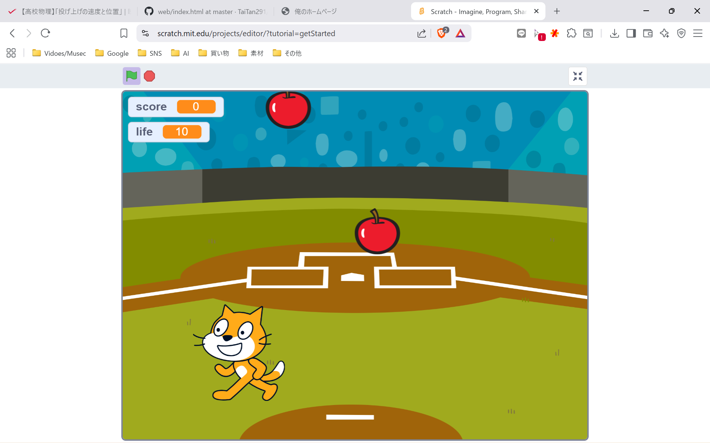

1-2 ゲーム

1.内容
主にあたり判定の設定と猫の移動、あたらしいオブジェクトの追加、変数を利用しての点数計算などをした。
このゲームは落ちてくるりんごをひろっていくもので猫の左右への移動と乱数で落てくる場所と時間をランダムにする必要がある。
2.感想
ジャンプをリアルにしようとプログラムを組んでみたがあまりリアルにならなかった。原因は遅延が多すぎて猫がカクカクしてしまうことから待つ動作を消してしまったこと。
難しくするために落たりんごがでたら即生成されるように作ろうとしたがクラッシュした。原因は不明で推測ではクローンが消える前にクローンが同じところに生成され、無限にクローンを生成しつづけていると思われる。
データが2回とんで悲しかった。